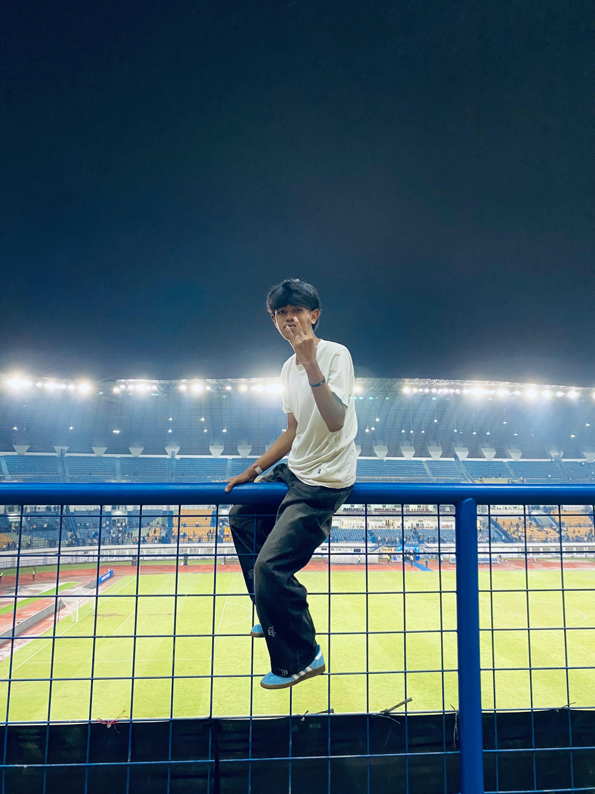

Saya membangun pengalaman digital berkinerja tinggi dan memukau secara visual yang menggabungkan keunggulan teknis dengan visi artistik.
Sekilas tentang latar belakang, dedikasi, dan cara saya mewujudkan ide menjadi nyata.

Halo, saya Rico Muhammad Fasa, mahasiswa Program Studi Sistem Informasi yang memiliki ketertarikan pada dunia teknologi dan pengembangan digital. Saya memiliki hobi bermain sepak bola dan bermain game. Melalui kedua hobi tersebut, saya belajar tentang kerja sama tim, strategi, disiplin, serta kemampuan berpikir cepat dalam menghadapi berbagai tantangan. Saya juga senang mempelajari hal-hal baru untuk terus mengembangkan kemampuan dan pengalaman di bidang teknologi.
"Desain bukan hanya tentang bagaimana tampilannya dan bagaimana rasanya. Desain adalah bagaimana hal itu bekerja."
Teknologi utama yang saya gunakan untuk membangun aplikasi yang andal dan terukur.
React, Next.js, dan framework CSS modern untuk membangun antarmuka pengguna yang interaktif.
Node.js, PostgreSQL, dan perancangan API untuk aliran data yang lancar.
Menciptakan pengalaman mobile yang responsif dan terasa orisinal.
Alat-alat yang membantu saya menjaga alur kerja berkualitas tinggi dan presisi.
Pilihan proyek terbaru saya yang menunjukkan keahlian dan kreativitas.